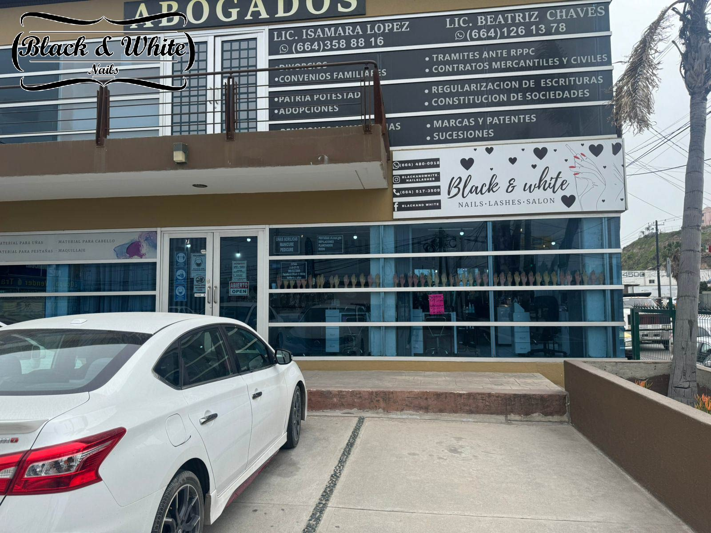

NOSOTROS



HISTORIA
El local "Black & White Nails" es un establecimiento de manicura, pedicura y pestañas. Se fundó el año 2015
MISIÓN
El local se hizo con la finalidad de poder solventar a la familia de la dueña
VISIÓN
El local tiene la visión de poder expandirse y contar con multiples locales.
©2024. Derechos reservados.
Desarrollado por: Estrada Félix Julio Santiago Matrícula:02111704 Grupo:607
Plantel Nueva Tijuana